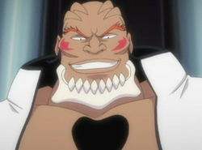
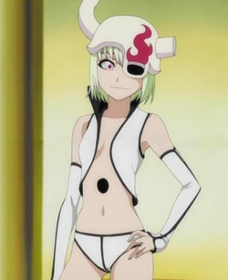
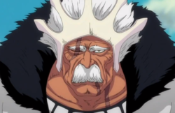
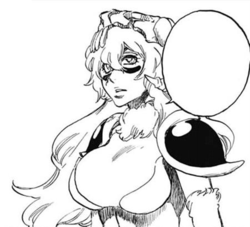
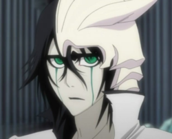
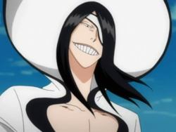
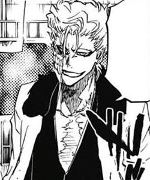
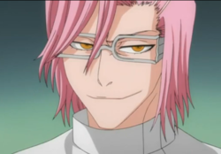
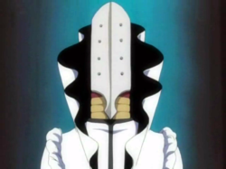

Espada

Front Look
Starrk has blue-gray eyes and wavy, dark brown hair, which ends at the base of his neck, is always unkempt, and is parted down the middle.
He has a faded goatee. His clothing is typical of an Arrancar: he wears a white jacket outlined in black, though altered with the collar upturned.
A black sash is worn in a manner similar to a matador around his waist and he wears white gloves.
The remains of his Hollow mask consist of a fanged bottom jaw which is positioned along his neck.
His Hollow hole is on his sternum, right below the tip of his mask.
His Espada tattoo is featured on the back of his left hand, which he conceals with his glove.
Starrk is a lazy and unenthusiastic man who spends much of his time asleep, and no one, except Lilynette Gingerbuck, his other half,
appears to try and stop him from doing so.Despite being the highest-ranking Espada, he is not eager to take a leadership role,
allowing Baraggan Louisenbairn to take over at the battle of the Fake Karakura Town. He is not particularly interested in whatever is going on around him,
though he is observant and a capable analyst. Unlike many of the Espada, he is not inherently violent or overly arrogant.
Prior to meeting Aizen, Starrk hated the loneliness he felt in the world but often could not avoid it because his mere presence killed off others around him.
He envied the weak and wanted to be like them because they could travel in groups.Eventually he felt so lonely that he divided his soul
into two separate beings to escape his solitude. From there he continued to search for friends until he met Aizen.
Despite having gained many comrades after joining Aizen, he rarely directly addresses any of them other than Lilynette.
He initially does not seem to care a great deal for his fellow Espada, showing no visible signs of distress or concern.
When he learns of Aaroniero Arruruerie's death, he lazily states there is nothing he could do about it,
and when Baraggan and Tier Harribel are apparently overwhelmed by their opponents' respective Bankai, he only asks Shunsui Kyōraku if all the captains' Bankai are so powerful.
However, this indifferent attitude seems to be dispelled with Baraggan's death. Starrk states Sōsuke Aizen not sparing even a word for Baraggan is horrible.
Starrk himself is notably affected by this turn of events, being drained of his motivation to fight.
After arguing with Lilynette for a while, he states he is not the type for revenge, but his desire to not see any more comrades die proves to be enough motivation for him to keep fighting.
Starrk seems to be opposed to the notion of killing people, offering Love Aikawa and Rōjūrō Ōtoribashi a chance to run away instead of finishing them off.
Starrk tried to live with other Hollows, but simply being near him caused them to lose their souls and die.Because of this,
he became jealous of how the weak are allowed to come together, and so wanted to become weak.
In an attempt to escape his loneliness, he split his soul into two when he became an Arrancar,
unlike most Arrancar who divide their powers into a Zanpakutō, which became himself and Lilynette Gingerbuck.
Not remembering which of them originally resembled themselves before they split, Starrk suspected their original appearance corresponded to neither of them.
Even so, Starrk wanted to become weak so he could be together with a group, and if this were not possible, he wanted to find someone as strong as him.
When he split his soul, he asked the newly formed Arrancar if she had a name.
Telling him her name was Lilynette, she asked if he had a name, despite them being the same person.
Telling her his, he threw her a cloth to wrap herself up in. As she asked him what would they do now, he stated they could do anything.
When she asked where would they go, he, stating they could go anywhere, assured Lilynette no matter what, they would stick together forever.
| Rank | Name | Pictures | Zanpakuto |
|---|---|---|---|
| Cero | Yammy Lliargo |  | Ira |
| Primera | Coyote Starrk | Los Lobos | |
| Lilynette Gingerbuck |  | ||
| Segunda | Barragan Lousienbairn |  | Arrogante |
| Tres | Nelliel Tu Odelschawnck |  | Gamuza |
| Cuatro | Ulquiorra Cifer |  | Murcielago |
| Quinto | Nnoitra Gilga |  | Santa Teresa |
| Sexta | Grimmjow jaegarjaquez |  | Pantera |
| Septima | Zommari Rureaux | |
Brujeria |
| Octava | Szayelaporoo Grantz |  | Fornicaras |
| Noveno | Aaroniero Arrururie |  | Glotoneria |